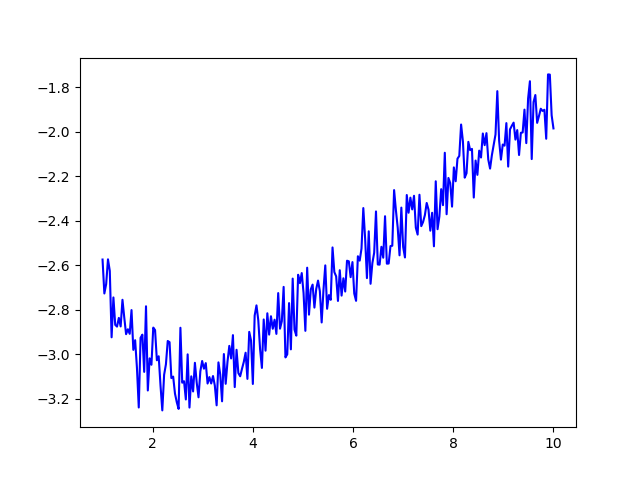
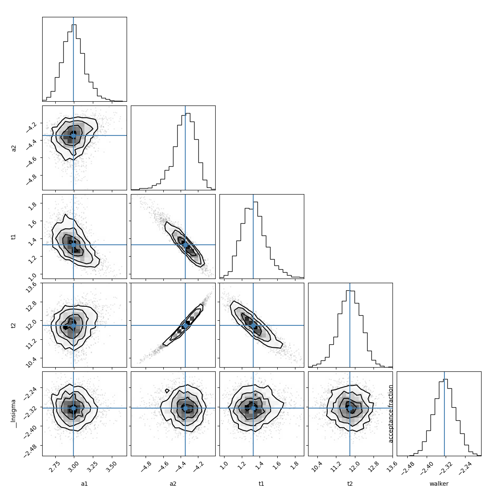
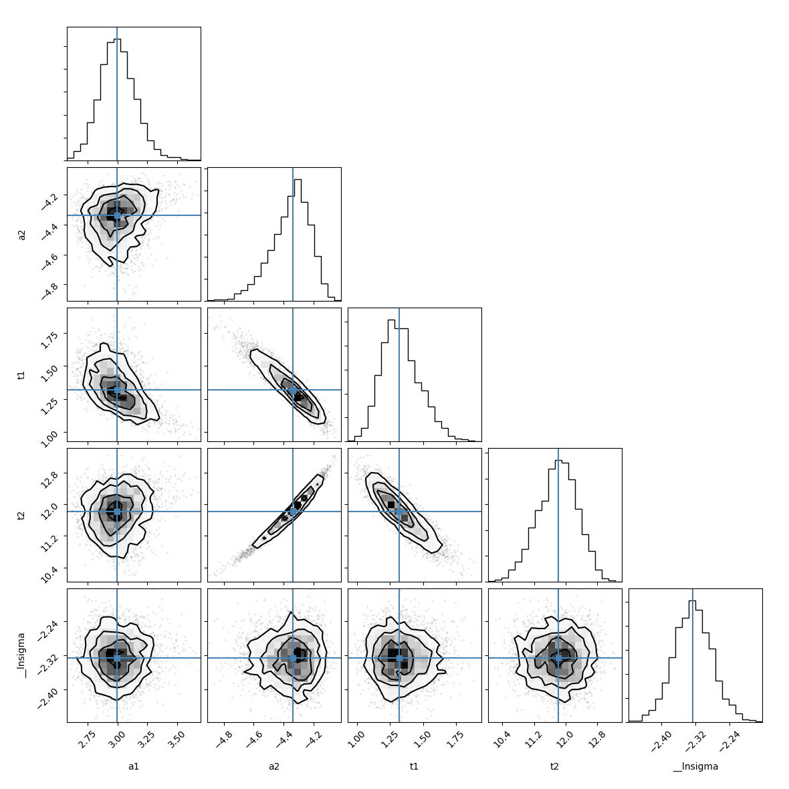

Note
Click here to download the full example code
doc_fitting_emcee.py¶
- 
- 
- 
Out:
[[Variables]]
a1: 2.98623689 +/- 0.15010519 (5.03%) (init = 4)
a2: -4.33525597 +/- 0.11765821 (2.71%) (init = 4)
t1: 1.30993186 +/- 0.13449653 (10.27%) (init = 3)
t2: 11.8240752 +/- 0.47172598 (3.99%) (init = 3)
[[Correlations]] (unreported correlations are < 0.500)
C(a2, t2) = 0.988
C(a2, t1) = -0.928
C(t1, t2) = -0.885
C(a1, t1) = -0.609
The chain is shorter than 50 times the integrated autocorrelation time for 5 parameter(s). Use this estimate with caution and run a longer chain!
N/50 = 20;
tau: [42.15955322 47.347426 48.71211873 46.7985718 40.89881208]
median of posterior probability distribution
--------------------------------------------
[[Variables]]
a1: 2.98945718 +/- 0.14033921 (4.69%) (init = 2.986237)
a2: -4.34687243 +/- 0.12131092 (2.79%) (init = -4.335256)
t1: 1.32883916 +/- 0.13766047 (10.36%) (init = 1.309932)
t2: 11.7836194 +/- 0.47719763 (4.05%) (init = 11.82408)
__lnsigma: -2.32559226 +/- 0.04542650 (1.95%) (init = -2.302585)
[[Correlations]] (unreported correlations are < 0.100)
C(a2, t2) = 0.981
C(a2, t1) = -0.938
C(t1, t2) = -0.894
C(a1, t1) = -0.508
C(a1, a2) = 0.214
C(a1, t2) = 0.178
Maximum Likelihood Estimation from emcee
-------------------------------------------------
Parameter MLE Value Median Value Uncertainty
a1 2.93839 2.98946 0.14034
a2 -4.35274 -4.34687 0.12131
t1 1.34310 1.32884 0.13766
t2 11.78782 11.78362 0.47720
Error Estimates from emcee
------------------------------------------------------
Parameter -2sigma -1sigma median +1sigma +2sigma
a1 -0.2656 -0.1362 2.9895 0.1445 0.3141
a2 -0.3209 -0.1309 -4.3469 0.1118 0.1985
t1 -0.2377 -0.1305 1.3288 0.1448 0.3278
t2 -1.0677 -0.4807 11.7836 0.4739 0.8990
# <examples/doc_fitting_emcee.py>
import numpy as np
import lmfit
try:
import matplotlib.pyplot as plt
HASPYLAB = True
except ImportError:
HASPYLAB = False
try:
import corner
HASCORNER = True
except ImportError:
HASCORNER = False
x = np.linspace(1, 10, 250)
np.random.seed(0)
y = (3.0*np.exp(-x/2) - 5.0*np.exp(-(x-0.1) / 10.) +
0.1*np.random.randn(x.size))
p = lmfit.Parameters()
p.add_many(('a1', 4), ('a2', 4), ('t1', 3), ('t2', 3., True))
def residual(p):
v = p.valuesdict()
return v['a1']*np.exp(-x/v['t1']) + v['a2']*np.exp(-(x-0.1) / v['t2']) - y
mi = lmfit.minimize(residual, p, method='nelder', nan_policy='omit')
lmfit.printfuncs.report_fit(mi.params, min_correl=0.5)
if HASPYLAB:
plt.figure()
plt.plot(x, y, 'o')
plt.plot(x, residual(mi.params) + y, label='best fit')
plt.legend()
plt.show()
# Place bounds on the ln(sigma) parameter that emcee will automatically add
# to estimate the true uncertainty in the data since is_weighted=False
mi.params.add('__lnsigma', value=np.log(0.1), min=np.log(0.001), max=np.log(2))
res = lmfit.minimize(residual, method='emcee', nan_policy='omit', burn=300,
steps=1000, thin=20, params=mi.params, is_weighted=False,
progress=False)
if HASPYLAB and HASCORNER:
emcee_corner = corner.corner(res.flatchain, labels=res.var_names,
truths=list(res.params.valuesdict().values()))
plt.show()
if HASPYLAB:
plt.plot(res.acceptance_fraction, 'o')
plt.xlabel('walker')
plt.ylabel('acceptance fraction')
plt.show()
if hasattr(res, "acor"):
print("Autocorrelation time for the parameters:")
print("----------------------------------------")
for i, par in enumerate(p):
print(par, res.acor[i])
print("\nmedian of posterior probability distribution")
print('--------------------------------------------')
lmfit.report_fit(res.params)
# find the maximum likelihood solution
highest_prob = np.argmax(res.lnprob)
hp_loc = np.unravel_index(highest_prob, res.lnprob.shape)
mle_soln = res.chain[hp_loc]
for i, par in enumerate(p):
p[par].value = mle_soln[i]
print('\nMaximum Likelihood Estimation from emcee ')
print('-------------------------------------------------')
print('Parameter MLE Value Median Value Uncertainty')
fmt = ' {:5s} {:11.5f} {:11.5f} {:11.5f}'.format
for name, param in p.items():
print(fmt(name, param.value, res.params[name].value,
res.params[name].stderr))
if HASPYLAB:
plt.figure()
plt.plot(x, y, 'o')
plt.plot(x, residual(mi.params) + y, label='Nelder-Mead')
plt.plot(x, residual(res.params) + y, '--', label='emcee')
plt.legend()
plt.show()
print('\nError Estimates from emcee ')
print('------------------------------------------------------')
print('Parameter -2sigma -1sigma median +1sigma +2sigma ')
for name in p.keys():
quantiles = np.percentile(res.flatchain[name],
[2.275, 15.865, 50, 84.135, 97.275])
median = quantiles[2]
err_m2 = quantiles[0] - median
err_m1 = quantiles[1] - median
err_p1 = quantiles[3] - median
err_p2 = quantiles[4] - median
fmt = ' {:5s} {:8.4f} {:8.4f} {:8.4f} {:8.4f} {:8.4f}'.format
print(fmt(name, err_m2, err_m1, median, err_p1, err_p2))
Total running time of the script: ( 0 minutes 7.932 seconds)